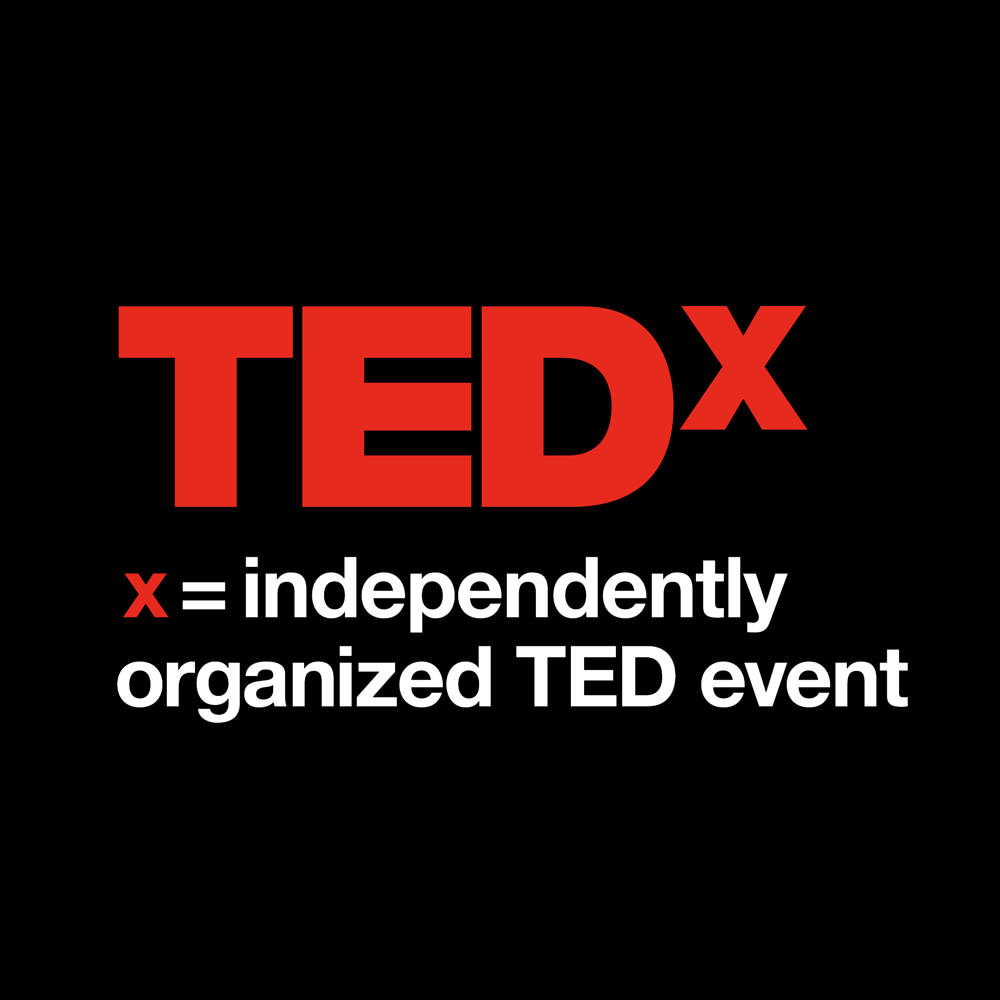

Unique in the UNC System, North Carolina School of Science and Mathematics is a world-class public high school with statewide reach, empowering students with the skills and knowledge to design their own future. Specializing in science, technology, engineering, and math — and with a robust humanities and arts program — NCSSM challenges talented high school juniors and seniors from across NC through a residential program on its historic campus in Durham and, soon, on a second campus being built in Morganton. The extensive online program and summer offerings extend the school’s impact to every corner of North Carolina. Founded in 1980 as the first of its kind, NCSSM has become the model for 18 such specialized schools around the globe.
TEDx Youth@NCSSM is a program designed to challenge and encourage people of all ages to engage and learn about some of the world’s biggest ideas. This year, we will coalesce around the theme “Uncharted”, seeking to highlight how probing the unknown can uncover new insights and experiences. Organized by a team of students at the North Carolina School of Science and Mathematics, this event has been long in the works to bring you a stimulating virtual experience, and is open to all to attend and stretch your brains and learn beyond what one can expect.
TEDx is a grassroots initiative, created in the spirit of TED’s overall mission to research and discover “ideas worth spreading.” TEDx brings the spirit of TED to local communities around the globe through TEDx events. These events are organized by passionate individuals who seek to uncover new ideas and to share the latest research in their local areas that spark conversations in their communities. TEDx events include live speakers and recorded TED Talks, and are organized independently under a free license granted by TED. These events are not controlled by TED, but event organizers agree to abide by our format, and are offered guidelines for curation, speaker coaching, event organizing and more. They learn from us and from each other. More than 3000 events are now held annually.
